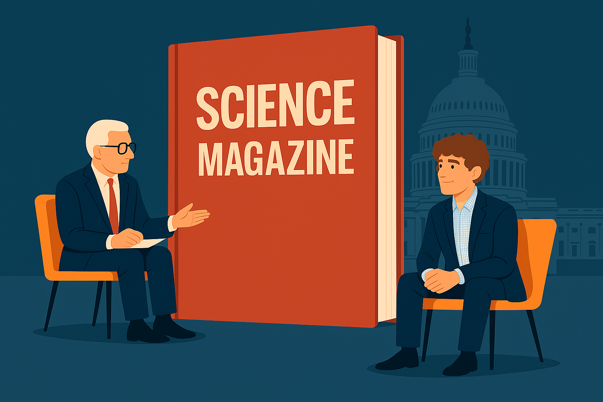

Sitting Down with the Editor-in-Chief of Science Magazine
In an era of growing skepticism and polarized discourse, clear science communication is more vital than ever. We sat down with Holden Thorp to explore how one of the world's leading science journals navigates this challenge.
Read The Interview


About The Catalyst
The Catalyst is dedicated to exploring the forefront of scientific discovery and communication. We aim to bridge the gap between complex research and public understanding, fostering a more informed and engaged society.
Learn More About Us